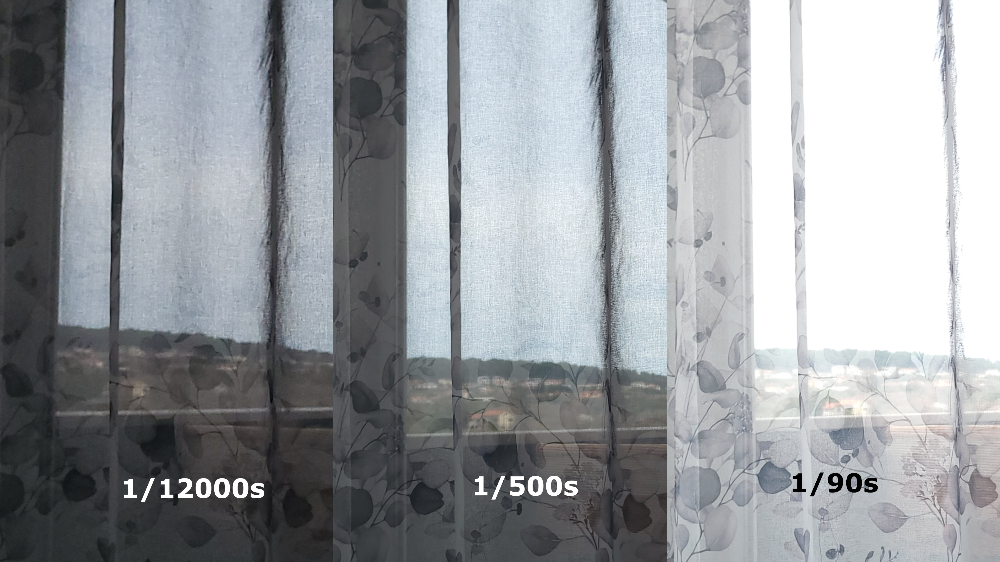
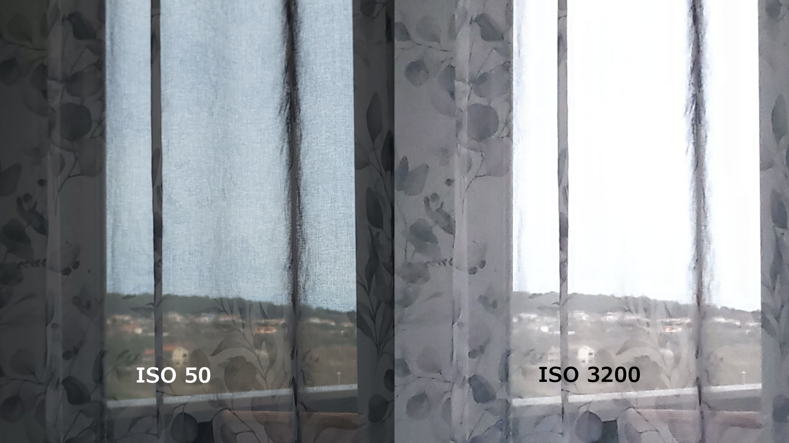
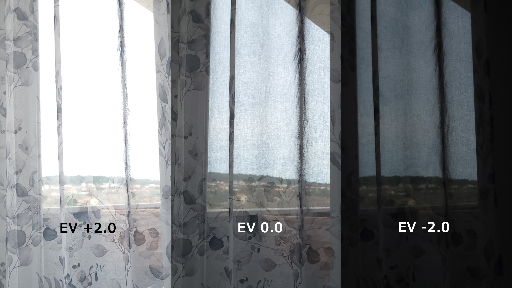
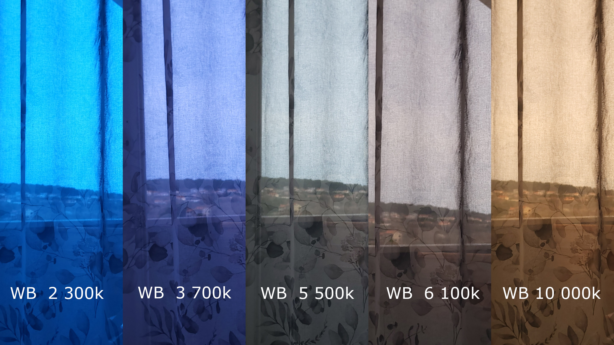

Fotografiranje
Ekspozicija
Ekspoziciju u fotografiranju kontrolira brzina zatvarača (shutter speed), tj. vrijeme tijekom kojeg je zatvarač fotoaparata otvoren i omogućuje svijetlost da doće do senzora ili vrijeme gdje fotoaparat snimi fotografiju.
Kratka ekspozicija je brza brzina ili kratko vrijeme otvorenog zatvarača. Koristi se za zamrzivanje pokreta, postizanje oštrine, smanjenje utjecaja podhrtavanja i u uvjetima jake svjetlost. Obično se fotografiraju objekti u pokretu.
Duga ekspozicija je spora brzina ili dulje vrijeme otvorenog zatvarača. Koristi se smanjenje šuma, zamagljivanje, čišće slike, efekt magle, tragovi svijetla i efekti pokreta.

Fokus
Određuju oštrinu i jasnoću subjketa na fotografiji. Elementi koji nisu u fokusu su obično zamagljeni. Koristi se za isticanje objekata. Može biti Automatski (AF) ili Ručni fokus (MF)

ISO osjetljivost (sensitivity)
ISO je razina osjetljivosti senzora na svjetlo. Viši ISO znači veću osjetljivost (veću ekspoziciju), niži ISO znači manju osjetljivost (nižu ekspoziciju).
Visoki ISO se koristi u sitacijama s manje svijetla, slika ima povećani šum.
Niski ISO se koristi u sitacijama s puno svijetla, slika ima veću oštrinu i manje šuma.

EV - ekspozicijski indeks (Exposure Value)
Opis ukupne količine svjetlosti koja ulazi u fotoaparat, tj. kombinacija brzine zatvarača i otvora blende fotoaparata. Niži brojevi označavaju vrlo slabo osvjetljenje, dok viši brojevi označavaju jaku, izravnu sunčevu svjetlost.

Balans bijele boje (White Balance)
Postavka koja prilagođava boje kako bi bijela boja izgledala prirodno i neutralno. Mjeri se u Kelvinima (K) i opisuje toplinu ili hladnoću svijetla
Niže vrijednosti označavaju hladnija svijetla sa plavim tonovima, dok više vrijednosti označavaju toplija svijetla sa narančastim tonovima.
